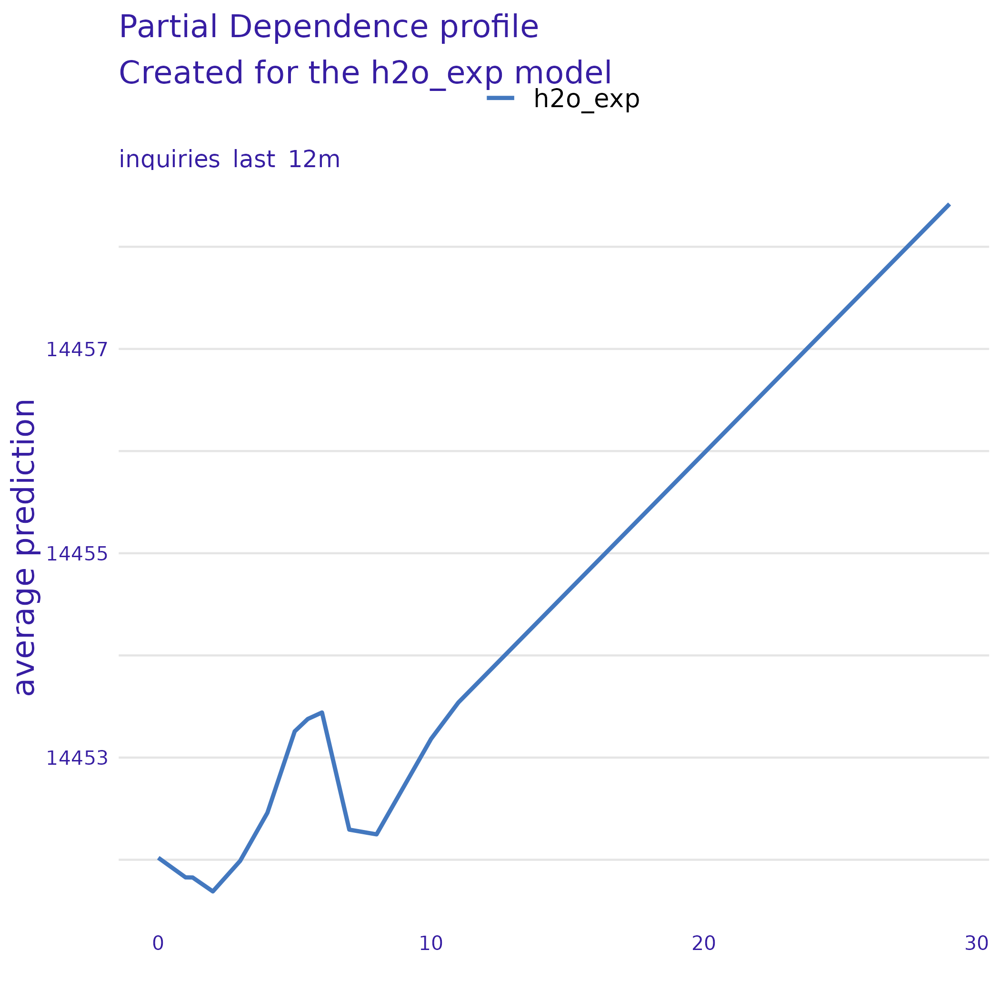
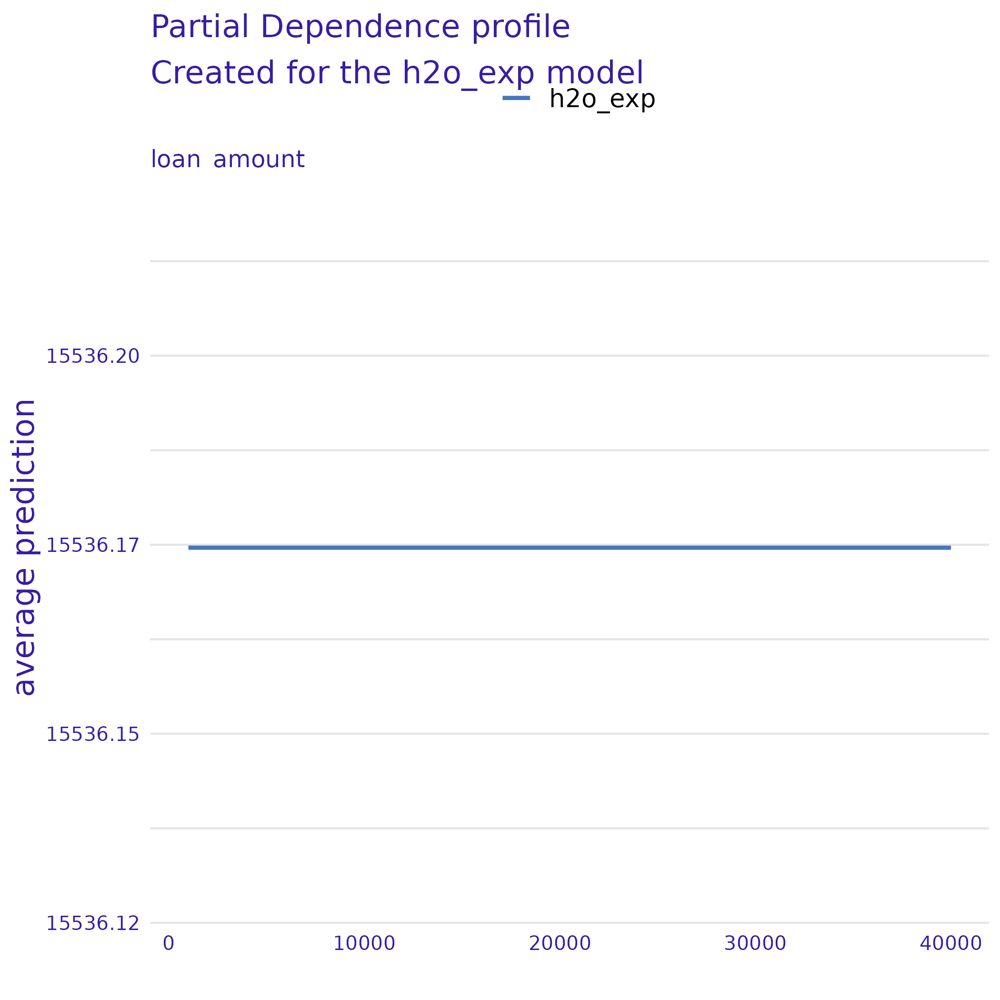

Feature: balance
Get this object: archivist::loadFromLocalRepo(md5hash = "02fde4b53c7e903476c6c96e91887a90", repoDir = "h2o_aML_explainer_output/repository")
Feature: installment
Get this object: archivist::loadFromLocalRepo(md5hash = "dc2170b9113b7eace05b7c12967dfdef", repoDir = "h2o_aML_explainer_output/repository")
Feature: term
Get this object: archivist::loadFromLocalRepo(md5hash = "bb7d253e708c2fc61721cfade0683ccc", repoDir = "h2o_aML_explainer_output/repository")
Feature: paid_total
Get this object: archivist::loadFromLocalRepo(md5hash = "f7d356e2714cadab5eb3b089bc97c9be", repoDir = "h2o_aML_explainer_output/repository")
Feature: paid_principal
Get this object: archivist::loadFromLocalRepo(md5hash = "5ff26d807d2a32aa59ead76a5a177a53", repoDir = "h2o_aML_explainer_output/repository")
Feature: sub_grade
Get this object: archivist::loadFromLocalRepo(md5hash = "b82c5241d0e902f3d91784dd3e2ec493", repoDir = "h2o_aML_explainer_output/repository")
Feature: interest_rate
Get this object: archivist::loadFromLocalRepo(md5hash = "efc1476edf4c1db81b89f0b476091ffe", repoDir = "h2o_aML_explainer_output/repository")
Feature: paid_interest
Get this object: archivist::loadFromLocalRepo(md5hash = "b955bf05c809f419f2782bcc8f320209", repoDir = "h2o_aML_explainer_output/repository")
Feature: grade
Get this object: archivist::loadFromLocalRepo(md5hash = "613958b612faf9b7fe953301c6940b10", repoDir = "h2o_aML_explainer_output/repository")
Feature: loan_status
Get this object: archivist::loadFromLocalRepo(md5hash = "9c343fc556cedce946def5a35b263b54", repoDir = "h2o_aML_explainer_output/repository")
Feature: issue_month
Get this object: archivist::loadFromLocalRepo(md5hash = "6b00060b61b88e81f5245f06c90cb9f7", repoDir = "h2o_aML_explainer_output/repository")
Feature: total_debit_limit
Get this object: archivist::loadFromLocalRepo(md5hash = "e067aa5c3cc2e1d0833765abfbcdd629", repoDir = "h2o_aML_explainer_output/repository")
Feature: initial_listing_status
Get this object: archivist::loadFromLocalRepo(md5hash = "a84dcf4edae5b51a41c0437c67f55a0b", repoDir = "h2o_aML_explainer_output/repository")
Feature: open_credit_lines
Get this object: archivist::loadFromLocalRepo(md5hash = "080bd0c89406e997d0d0466420433d40", repoDir = "h2o_aML_explainer_output/repository")
Feature: emp_length
Get this object: archivist::loadFromLocalRepo(md5hash = "cdd241af764798cd4123ebe5d19c4560", repoDir = "h2o_aML_explainer_output/repository")
Feature: total_credit_limit
Get this object: archivist::loadFromLocalRepo(md5hash = "70182359ee0b2451ebbe9d7cdb5f4f46", repoDir = "h2o_aML_explainer_output/repository")
Feature: verification_income_joint
Get this object: archivist::loadFromLocalRepo(md5hash = "4cc1924d4c522db53578d0b7ce640357", repoDir = "h2o_aML_explainer_output/repository")
Feature: num_total_cc_accounts
Get this object: archivist::loadFromLocalRepo(md5hash = "8881aa293d9da4859bf197777d4d3c33", repoDir = "h2o_aML_explainer_output/repository")
Feature: num_satisfactory_accounts
Get this object: archivist::loadFromLocalRepo(md5hash = "74ab15d3ed856bb94dae2bc45dcc43de", repoDir = "h2o_aML_explainer_output/repository")
Feature: total_credit_utilized
Get this object: archivist::loadFromLocalRepo(md5hash = "d75aea21b99915dbf1fe0a6e9b146e57", repoDir = "h2o_aML_explainer_output/repository")
Feature: tax_liens
Get this object: archivist::loadFromLocalRepo(md5hash = "46b82b8b664e79f5f105863c87385799", repoDir = "h2o_aML_explainer_output/repository")
Feature: annual_income
Get this object: archivist::loadFromLocalRepo(md5hash = "a4305c0fe8d037e7cc52b7b636f70bf9", repoDir = "h2o_aML_explainer_output/repository")
Feature: inquiries_last_12m
Get this object: archivist::loadFromLocalRepo(md5hash = "adab7587f4134791b523e71b8bb74cf6", repoDir = "h2o_aML_explainer_output/repository")
Feature: num_mort_accounts
Get this object: archivist::loadFromLocalRepo(md5hash = "7b4a3d7a0b7b1094925991e233a5b9ae", repoDir = "h2o_aML_explainer_output/repository")
Feature: account_never_delinq_percent
Get this object: archivist::loadFromLocalRepo(md5hash = "1c005f3da6b20c64a3d8dbe8c93bef78", repoDir = "h2o_aML_explainer_output/repository")
Feature: debt_to_income_joint
Get this object: archivist::loadFromLocalRepo(md5hash = "1af512800e59c9ebb83971fa980c0e52", repoDir = "h2o_aML_explainer_output/repository")
Feature: accounts_opened_24m
Get this object: archivist::loadFromLocalRepo(md5hash = "6a91c49f03e25a425fabb7af8b41a91c", repoDir = "h2o_aML_explainer_output/repository")
Feature: earliest_credit_line
Get this object: archivist::loadFromLocalRepo(md5hash = "fdd7fff611a24b76c4722611ea462ff6", repoDir = "h2o_aML_explainer_output/repository")
Feature: application_type
Get this object: archivist::loadFromLocalRepo(md5hash = "19395e9a7f94ed9c4443ac8ea51f9a2b", repoDir = "h2o_aML_explainer_output/repository")
Feature: annual_income_joint
Get this object: archivist::loadFromLocalRepo(md5hash = "3ce36394c41f4652ab9633654e2f91f6", repoDir = "h2o_aML_explainer_output/repository")
Feature: disbursement_method
Get this object: archivist::loadFromLocalRepo(md5hash = "0c1f5ff8391b6c424bbe4fe51ca35ee7", repoDir = "h2o_aML_explainer_output/repository")
Feature: debt_to_income
Get this object: archivist::loadFromLocalRepo(md5hash = "8b80ed7c51b706b1e43820b27f413d9b", repoDir = "h2o_aML_explainer_output/repository")
Feature: num_collections_last_12m
Get this object: archivist::loadFromLocalRepo(md5hash = "b3bdefbfd43abd3494f2ae88bc3ac259", repoDir = "h2o_aML_explainer_output/repository")
Feature: current_accounts_delinq
Get this object: archivist::loadFromLocalRepo(md5hash = "e0c78b00f4e3c73220ea42f96d7d5c5e", repoDir = "h2o_aML_explainer_output/repository")
Feature: num_accounts_120d_past_due
Get this object: archivist::loadFromLocalRepo(md5hash = "804eece9ec0560db045b1763f70e1973", repoDir = "h2o_aML_explainer_output/repository")
Feature: num_accounts_30d_past_due
Get this object: archivist::loadFromLocalRepo(md5hash = "d6669e15a8558d34fbd46d8d757421bd", repoDir = "h2o_aML_explainer_output/repository")
Feature: loan_amount
Get this object: archivist::loadFromLocalRepo(md5hash = "63915e7e7a44194cb5660566c60aeabc", repoDir = "h2o_aML_explainer_output/repository")
Feature: total_collection_amount_ever
Get this object: archivist::loadFromLocalRepo(md5hash = "7d6c805e9e77f24af68e80ea6f8c42ca", repoDir = "h2o_aML_explainer_output/repository")
Feature: num_open_cc_accounts
Get this object: archivist::loadFromLocalRepo(md5hash = "fe57884c95930a204494da30b2e29fe1", repoDir = "h2o_aML_explainer_output/repository")
Feature: public_record_bankrupt
Get this object: archivist::loadFromLocalRepo(md5hash = "1f4b82dd747cd544a5e7cd8bdae340c5", repoDir = "h2o_aML_explainer_output/repository")
Feature: num_historical_failed_to_pay
Get this object: archivist::loadFromLocalRepo(md5hash = "3f1730f78b741f191861bd67f58d6b87", repoDir = "h2o_aML_explainer_output/repository")
Feature: num_cc_carrying_balance
Get this object: archivist::loadFromLocalRepo(md5hash = "bb5c80ef592c83fe10d95f3a27015ab3", repoDir = "h2o_aML_explainer_output/repository")
Feature: months_since_90d_late
Get this object: archivist::loadFromLocalRepo(md5hash = "bb2b18eac2bb8fa79cb3d3ac947bbeeb", repoDir = "h2o_aML_explainer_output/repository")
Feature: delinq_2y
Get this object: archivist::loadFromLocalRepo(md5hash = "2aec3e2509126351cbcb2ce6cd9fd0cf", repoDir = "h2o_aML_explainer_output/repository")
Feature: months_since_last_credit_inquiry
Get this object: archivist::loadFromLocalRepo(md5hash = "58d06add37e8c4389c2a12713571bae9", repoDir = "h2o_aML_explainer_output/repository")
Feature: loan_purpose
Get this object: archivist::loadFromLocalRepo(md5hash = "ae60dcb17eaa7254a2f17d737fbc5531", repoDir = "h2o_aML_explainer_output/repository")
Feature: paid_late_fees
Get this object: archivist::loadFromLocalRepo(md5hash = "b82cd381535d6860960843e610fc462e", repoDir = "h2o_aML_explainer_output/repository")
Feature: homeownership
Get this object: archivist::loadFromLocalRepo(md5hash = "8132b5b7c2330291980f99695cfb4b6e", repoDir = "h2o_aML_explainer_output/repository")
Feature: total_credit_lines
Get this object: archivist::loadFromLocalRepo(md5hash = "de84404f9e2bae66a57638871b65deb5", repoDir = "h2o_aML_explainer_output/repository")
Feature: verified_income
Get this object: archivist::loadFromLocalRepo(md5hash = "99970a2c37ee9b4bc4ed7d6e09abb599", repoDir = "h2o_aML_explainer_output/repository")
Feature: current_installment_accounts
Get this object: archivist::loadFromLocalRepo(md5hash = "9935117959f58216b8981ec633290e8b", repoDir = "h2o_aML_explainer_output/repository")
Feature: num_active_debit_accounts
Get this object: archivist::loadFromLocalRepo(md5hash = "57b15e03437c3871a2131387c16f6798", repoDir = "h2o_aML_explainer_output/repository")